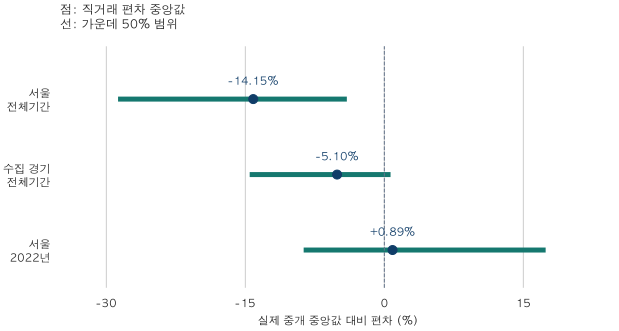

아파트 가격표 읽기 · 직거래의 비교 기준
아파트 직거래 가격 비교: 낮은 실거래가를 시세로 봐도 될까?
서울·수집 경기 직거래를 모형 기준가격과 같은 단지의 실제 중개거래로 비교했습니다. 낮은 가격 편차와 반대 사례, 비교 표본의 포함률을 함께 확인해 개별 집의 할인율로 오해하지 않는 방법을 설명합니다.
분석 기간 · 2021.11~2026.6 · 연도·같은 상반기 비교 | 보유 자료 스냅샷 생성 · 2026-10-04
주변 거래보다 낮은 아파트 직거래를 발견해도, 그 가격을 내 후보 주택의 시세로 바로 옮기기는 어렵습니다. 서울·수집 경기의 2021년 11월~2026년 6월 자료에서는 비교 가능한 직거래의 가격 편차 중앙값이 전체기간에는 낮았지만, 서울 2022년에는 반대 방향인 비교도 있었습니다. 어떤 가격과 비교했는지, 전체 직거래 중 얼마나 연결됐는지를 함께 봐야 합니다.
‘시세보다 낮다’의 시세는 무엇인가요?
이 글은 두 기준을 나눴습니다. A는 계약일보다 앞선 자체 모형 기준가격, B는 같은 단지·전용 평형·분기·층군에서 관측한 실제 중개거래의 전용 평당가 중앙값입니다. A는 모형이 만든 기준이고, B도 동일한 집의 반복 거래는 아닙니다. 두 표의 차이를 모형 오류로 읽으면 안 됩니다. 기준가격뿐 아니라 비교에 들어간 직거래도 다릅니다.
대상은 현재 서울 25구와 이 블로그가 수집하는 경기 36지역입니다. 인천과 경기 일부 지역은 없습니다. 계약 기간은 직거래 구분을 확인할 수 있는 2021년 11월부터 2026년 6월까지 56개월입니다. 해제·가격 또는 면적 무효·분류 불명 등은 가격 비교에서 제외합니다. 공란을 ‘중개 확인’으로 바꾸지 않습니다.
A에서는 단지의 같은 전용 평형에 대한 계약일보다 엄격히 이전 목요일의 기준가격을 실제 전용면적으로 환산합니다. 각 계약의 (실제 금액 ÷ 환산 기준가격 − 1) × 100을 계산한 뒤 분포를 구했습니다. −10%는 그 계약 금액이 해당 기준보다 10% 낮다는 뜻입니다. 직거래 대표금액을 중개 대표금액으로 나눈 비율과는 다릅니다.
| 지역·기간·면적·범주 | 중앙값 % | 가운데 50% 범위 % | 평균 % | 표본 건수 | 표본 / 범주 · 포함률 |
|---|---|---|---|---|---|
| 서울 · 2021.11~2026.6 · 전체 면적 · 직거래 | -10.73 | -25.29 ~ -1.66 | -12.36 | 4,421 | 4,421 / 10,177 (43.44%) |
| 서울 · 2021.11~2026.6 · 전체 면적 · 명시 중개 | +0.89 | -2.16 ~ +3.95 | +0.88 | 160,270 | 160,270 / 199,952 (80.15%) |
| 수집 경기 · 2021.11~2026.6 · 전체 면적 · 직거래 | -5.95 | -15.40 ~ +0.38 | -7.51 | 14,407 | 14,407 / 20,230 (71.22%) |
| 수집 경기 · 2021.11~2026.6 · 전체 면적 · 명시 중개 | +0.05 | -3.39 ~ +3.17 | -0.17 | 352,302 | 352,302 / 392,671 (89.72%) |
직거래의 모형 편차 중앙값은 서울 −10.73%, 경기 −5.95%이고 명시 중개는 +0.89%, +0.05%입니다. 그러나 A 포함률도 두 범주에서 다릅니다. 서울 직거래는 43.44%, 중개는 80.15%입니다. 비교 가능한 기준가격이 없는 거래까지 이 결과가 대표하지는 않습니다.
여기서 포함률은 가격 비교 표본 ÷ 해당 가격 범주의 전체 건수입니다. 신고된 모든 계약에서 직거래 표시를 센 비중과 다릅니다. 뒤의 신고 비중 표에는 해제된 직거래도 포함됩니다. 가격의 종류부터 정리하려면 실거래가·호가·시세의 차이, 모형의 해석은 아파트 시세 추정오차 읽기를 참고하세요.
같은 단지의 실제 중개거래와 비교하면 얼마나 다른가요?
B는 같은 단지·정확한 전용 평형·달력 분기 안에서 층군까지 맞춥니다. 층군은 1~3층과 나머지 확인된 층으로 나누며 층 미상은 제외합니다. 해당 조건에 명시 중개거래가 최소 3건 있어야 중앙값을 기준으로 삼습니다. 각 직거래의 전용 평당가를 그 기준으로 나눈 편차를 계산합니다.
이렇게 연결된 서울 직거래 1,590건의 편차 중앙값은 −14.15%, 수집 경기 6,473건은 −5.10%입니다. 같은 표에 층군을 합친 민감도도 실었습니다. 가운데 50% 범위는 편차 분포의 25~75백분위이며 오차범위나 신뢰구간이 아닙니다.
| 지역·기간·면적·층 | 중앙값 % | 가운데 50% 범위 % | 직거래 표본 | 표본 / 직거래 범주 · 포함률 |
|---|---|---|---|---|
| 서울 · 2021.11~2026.6 · 전체 면적 · 층군 구분 | -14.15 | -28.74 ~ -4.04 | 1,590 | 1,590 / 10,177 (15.62%) |
| 서울 · 2021.11~2026.6 · 전체 면적 · 층군 합침 | -13.90 | -28.32 ~ -3.86 | 2,094 | 2,094 / 10,177 (20.58%) |
| 수집 경기 · 2021.11~2026.6 · 전체 면적 · 층군 구분 | -5.10 | -14.53 ~ +0.67 | 6,473 | 6,473 / 20,230 (32.00%) |
| 수집 경기 · 2021.11~2026.6 · 전체 면적 · 층군 합침 | -5.10 | -14.64 ~ +0.78 | 8,235 | 8,235 / 20,230 (40.71%) |

“같은 단지라고 같은 집의 정상가격을 알 수 있나요?”라는 반론이 맞습니다. 같은 전용 평형과 층군 안에서도 동·향·조망·수리 상태와 계약 사정이 다릅니다. 특히 전체기간 B 포함률은 서울 15.62%, 경기 32.00%에 그칩니다. 중개 비교가 가능한 일부 직거래에서 관측한 차이이며, 연결되지 않은 직거래의 차이는 알 수 없습니다.
직거래는 언제나 더 낮았나요?
그렇지 않았습니다. 서울 2022년 전체 면적의 층군 구분 B 비교에서는 84건의 편차 중앙값이 +0.89%였습니다. 가운데 50% 범위도 음수와 양수에 걸칩니다. 이 결과는 ‘모든 직거래가 싸다’는 해석의 반례이지, 2022년 서울 직거래 전체가 비쌌다는 증거는 아닙니다.
| 지역·기간·면적·층 | 중앙값 % | 가운데 50% 범위 % | 직거래 표본 | 표본 / 직거래 범주 · 포함률 |
|---|---|---|---|---|
| 서울 · 2022년 · 전체 면적 · 층군 구분 | +0.89 | -8.71 ~ +17.41 | 84 | 84건 · 포함률 미공개 |
이 행은 가격분포와 표본 건수는 제공하지만, 다른 공개 표와 결합한 소수 집단 보호 때문에 정확한 포함률과 그 분모는 제공하지 않습니다. 포함률 미공개는 0%나 100%가 아니며 전체 대표성을 판단할 정보가 충분하다는 뜻도 아닙니다. 같은 기간의 A 비교와 층군 합침 B도 공개 제한이 있어 수치를 대신 추정하지 않습니다.
층과 지역·면적 구성을 맞추면 결론이 달라지나요?
전체기간 B에서 층군을 합치면 서울 중앙값은 −13.90%, 경기는 −5.10%입니다. 층 미상은 여전히 제외하고 같은 단지·전용 평형·분기를 유지합니다. 층군 구분 결과와 비슷해도 모든 주택 특성이 같아졌다는 뜻은 아닙니다. 합친 비교에는 새로 연결되는 거래도 들어오므로 순수한 ‘층 효과’가 아닙니다.
A에서는 지역·면적군·분기 조합마다 직거래와 중개가 모두 10건 이상인 공통 집단을 별도로 골랐습니다. 각 조합의 두 평균 편차에 같은 직거래 건수 가중치를 줘 지역·면적·분기 구성 차이에 얼마나 민감한지 봤습니다. 전체기간 결과는 아래와 같습니다. 이는 동일 단지 매칭이나 모든 조건의 통제가 아닙니다.
| 지역·기간·면적 | 직거래 가중평균 % | 중개 가중평균 % | 차이 %p | 공통 직거래 / A 직거래 | 공통 중개 / A 중개 |
|---|---|---|---|---|---|
| 서울 · 2021.11~2026.6 · 전체 면적 | -13.87 | +0.71 | -14.58 | 351 / 4,421 (7.94%) | 8,804 / 160,270 (5.49%) |
| 수집 경기 · 2021.11~2026.6 · 전체 면적 | -6.90 | -0.64 | -6.26 | 4,651 / 14,407 (32.28%) | 101,465 / 352,302 (28.80%) |
가중 평균 편차의 차이는 서울 −14.58%p, 경기 −6.26%p입니다. 이 숫자는 B의 중개 평당가 대비 비율과 단위·분모가 다릅니다. 더 중요한 제약은 공통 집단에 남은 직거래가 A 직거래의 서울 7.94%, 경기 32.28%뿐이라는 점입니다. 이 작은 공통 집단에서 차이가 남았다고 전체 직거래의 구성 차이가 제거됐다고 결론 내릴 수 없습니다.
낮은 직거래가 보이면 무엇부터 확인하나요?
- 거래 상태: 직거래 표시와 해제 여부, 계약일·자료 기준일을 먼저 확인합니다. 해제된 신고를 현재 가격 근거로 쓰지 않습니다.
- 비교가격의 종류: 호가인지 실제 중개거래인지 모형 기준인지 구분합니다. 같은 단지라도 전용면적·층·계약 시기가 다른 거래를 그대로 비교하지 않습니다.
- 표본과 빠진 거래: 표본 건수와 포함률을 함께 봅니다. 미공개·미상 정보를 낮은 위험이나 작은 영향으로 해석하지 않습니다.
- 개별 조건: 동·향·상태·권리관계·거래 조건을 별도로 확인합니다. 이 글의 중앙값을 후보 집 가격에 곱해 적정가를 만들지 않습니다.
이 자료가 보여주는 것은 비교 가능한 일부 직거래가 어떤 기준보다 얼마나 높거나 낮게 관측됐는지입니다. 왜 그 가격으로 계약했는지, 지금 그 가격에 살 수 있는지까지 답하지는 않습니다.
기간·면적·지역별 전체 비교표
2021년은 11~12월만이며, 2025년 전체와 같은 해 상반기는 겹치는 별도 비교 창입니다. ‘전용 17·18평형’과 ‘25·26평형’은 원자료의 정확 평형별 계산 후 합친 집단으로, 정확히 59㎡·84㎡만 고른 표가 아닙니다. 비교 시 정확 평형을 서로 바꾸지는 않습니다.
가격분포는 해당 범주에 40거래·10단지 이상을 요구합니다. ‘표본 기준 미달’과 기존 공개 자료와의 결합 때문에 생기는 ‘공동 공개 제한’을 구분했습니다. 가격이 남고 포함률만 미공개인 행도 있습니다. 모든 원래 라벨을 남겼으며, 빈칸을 0으로 보거나 빠진 월을 연결해 추세를 만들지 마세요. 넓은 표는 표 안에서 가로로 움직여 볼 수 있습니다.
아래 신고 비중은 직거래 표시 건수 ÷ 병합된 전체 신고 계약 건수 × 100입니다. 해제된 직거래와 미상·무효 신고도 각 정의에 따라 분자 또는 분모에 남습니다. 가격표의 포함률이나 유효 거래만의 직거래 비중과 혼동하지 마세요.
A 모형 비교 · 전체 면적 전체 기간표
| 지역·기간·면적·범주 | 중앙값 % | 가운데 50% 범위 % | 평균 % | 표본 건수 | 표본 / 범주 · 포함률 |
|---|---|---|---|---|---|
| 서울 · 2021.11~2026.6 · 전체 면적 · 직거래 | -10.73 | -25.29 ~ -1.66 | -12.36 | 4,421 | 4,421 / 10,177 (43.44%) |
| 서울 · 2021.11~2026.6 · 전체 면적 · 명시 중개 | +0.89 | -2.16 ~ +3.95 | +0.88 | 160,270 | 160,270 / 199,952 (80.15%) |
| 수집 경기 · 2021.11~2026.6 · 전체 면적 · 직거래 | -5.95 | -15.40 ~ +0.38 | -7.51 | 14,407 | 14,407 / 20,230 (71.22%) |
| 수집 경기 · 2021.11~2026.6 · 전체 면적 · 명시 중개 | +0.05 | -3.39 ~ +3.17 | -0.17 | 352,302 | 352,302 / 392,671 (89.72%) |
| 서울 · 2021.11~12 · 전체 면적 · 직거래 | -1.23 | -8.00 ~ +4.17 | -1.62 | 151 | 151건 · 포함률 미공개 |
| 서울 · 2021.11~12 · 전체 면적 · 명시 중개 | +0.73 | -3.10 ~ +4.51 | +1.11 | 1,514 | 1,514건 · 포함률 미공개 |
| 수집 경기 · 2021.11~12 · 전체 면적 · 직거래 | -4.27 | -12.03 ~ +3.34 | -3.08 | 511 | 511건 · 포함률 미공개 |
| 수집 경기 · 2021.11~12 · 전체 면적 · 명시 중개 | +0.91 | -3.04 ~ +5.85 | +2.19 | 5,593 | 5,593건 · 포함률 미공개 |
| 서울 · 2022년 · 전체 면적 | 공동 공개 제한 | ||||
| 수집 경기 · 2022년 · 전체 면적 · 직거래 | -7.02 | -17.69 ~ +0.61 | -7.47 | 2,020 | 2,020 / 3,303 (61.16%) |
| 수집 경기 · 2022년 · 전체 면적 · 명시 중개 | -1.90 | -7.14 ~ +2.23 | -2.43 | 25,233 | 25,233 / 31,681 (79.65%) |
| 서울 · 2023년 · 전체 면적 | 공동 공개 제한 | ||||
| 수집 경기 · 2023년 · 전체 면적 · 직거래 | -5.66 | -13.76 ~ +0.83 | -6.36 | 3,019 | 3,019건 · 포함률 미공개 |
| 수집 경기 · 2023년 · 전체 면적 · 명시 중개 | +0.04 | -3.71 ~ +3.44 | -0.28 | 65,547 | 65,547건 · 포함률 미공개 |
| 서울 · 2024년 · 전체 면적 | 공동 공개 제한 | ||||
| 수집 경기 · 2024년 · 전체 면적 | 공동 공개 제한 | ||||
| 서울 · 2025년 · 전체 면적 · 직거래 | -12.83 | -27.69 ~ -3.02 | -14.77 | 1,293 | 1,293건 · 포함률 미공개 |
| 서울 · 2025년 · 전체 면적 · 명시 중개 | +1.21 | -1.62 ~ +4.20 | +1.39 | 58,915 | 58,915건 · 포함률 미공개 |
| 수집 경기 · 2025년 · 전체 면적 · 직거래 | -5.33 | -14.52 ~ +0.63 | -7.42 | 3,511 | 3,511건 · 포함률 미공개 |
| 수집 경기 · 2025년 · 전체 면적 · 명시 중개 | +0.11 | -2.95 ~ +2.95 | -0.04 | 102,203 | 102,203건 · 포함률 미공개 |
| 서울 · 2025년 상반기 · 전체 면적 · 직거래 | -10.46 | -24.41 ~ -2.16 | -12.71 | 671 | 671 / 1,427 (47.02%) |
| 서울 · 2025년 상반기 · 전체 면적 · 명시 중개 | +0.91 | -1.75 ~ +3.64 | +0.98 | 32,578 | 32,578 / 38,638 (84.32%) |
| 수집 경기 · 2025년 상반기 · 전체 면적 · 직거래 | -4.86 | -13.40 ~ +0.63 | -6.80 | 1,775 | 1,775 / 2,331 (76.15%) |
| 수집 경기 · 2025년 상반기 · 전체 면적 · 명시 중개 | -0.13 | -3.18 ~ +2.64 | -0.32 | 50,164 | 50,164 / 55,295 (90.72%) |
| 서울 · 2026년 상반기 · 전체 면적 | 공동 공개 제한 | ||||
| 수집 경기 · 2026년 상반기 · 전체 면적 | 공동 공개 제한 | ||||
A 모형 비교 · 전용 17·18평형 전체 기간표
| 지역·기간·면적·범주 | 중앙값 % | 가운데 50% 범위 % | 평균 % | 표본 건수 | 표본 / 범주 · 포함률 |
|---|---|---|---|---|---|
| 서울 · 2021.11~2026.6 · 전용 17·18평형 · 직거래 | -13.93 | -28.45 ~ -3.68 | -15.78 | 858 | 858 / 1,479 (58.01%) |
| 서울 · 2021.11~2026.6 · 전용 17·18평형 · 명시 중개 | +0.93 | -1.89 ~ +3.67 | +0.85 | 48,893 | 48,893 / 55,642 (87.87%) |
| 수집 경기 · 2021.11~2026.6 · 전용 17·18평형 · 직거래 | -6.05 | -14.66 ~ -0.04 | -8.05 | 3,066 | 3,066 / 3,932 (77.98%) |
| 수집 경기 · 2021.11~2026.6 · 전용 17·18평형 · 명시 중개 | +0.03 | -3.34 ~ +3.01 | -0.33 | 93,193 | 93,193 / 99,795 (93.38%) |
| 서울 · 2021.11~12 · 전용 17·18평형 | 표본 기준 미달 | ||||
| 수집 경기 · 2021.11~12 · 전용 17·18평형 · 직거래 | -6.95 | -13.14 ~ -1.05 | -7.50 | 82 | 82 / 102 (80.39%) |
| 수집 경기 · 2021.11~12 · 전용 17·18평형 · 명시 중개 | +0.71 | -2.94 ~ +5.48 | +2.19 | 1,475 | 1,475 / 1,576 (93.59%) |
| 서울 · 2022년 · 전용 17·18평형 | 공동 공개 제한 | ||||
| 수집 경기 · 2022년 · 전용 17·18평형 · 직거래 | -7.04 | -18.40 ~ +0.01 | -9.36 | 422 | 422 / 559 (75.49%) |
| 수집 경기 · 2022년 · 전용 17·18평형 · 명시 중개 | -1.86 | -6.88 ~ +2.08 | -2.63 | 6,922 | 6,922 / 8,035 (86.15%) |
| 서울 · 2023년 · 전용 17·18평형 | 공동 공개 제한 | ||||
| 수집 경기 · 2023년 · 전용 17·18평형 · 직거래 | -6.24 | -12.91 ~ +0.25 | -6.61 | 665 | 665 / 877 (75.83%) |
| 수집 경기 · 2023년 · 전용 17·18평형 · 명시 중개 | -0.09 | -3.77 ~ +3.10 | -0.60 | 17,275 | 17,275 / 19,170 (90.11%) |
| 서울 · 2024년 · 전용 17·18평형 | 공동 공개 제한 | ||||
| 수집 경기 · 2024년 · 전용 17·18평형 | 공동 공개 제한 | ||||
| 서울 · 2025년 · 전용 17·18평형 · 직거래 | -14.97 | -28.78 ~ -4.00 | -15.96 | 263 | 263 / 372 (70.70%) |
| 서울 · 2025년 · 전용 17·18평형 · 명시 중개 | +1.12 | -1.50 ~ +3.73 | +1.13 | 18,058 | 18,058 / 19,662 (91.84%) |
| 수집 경기 · 2025년 · 전용 17·18평형 · 직거래 | -5.28 | -13.90 ~ -0.04 | -8.02 | 738 | 738 / 927 (79.61%) |
| 수집 경기 · 2025년 · 전용 17·18평형 · 명시 중개 | +0.15 | -2.90 ~ +2.84 | -0.15 | 27,328 | 27,328 / 28,701 (95.22%) |
| 서울 · 2025년 상반기 · 전용 17·18평형 · 직거래 | -11.01 | -25.07 ~ -1.53 | -13.44 | 136 | 136 / 217 (62.67%) |
| 서울 · 2025년 상반기 · 전용 17·18평형 · 명시 중개 | +0.79 | -1.63 ~ +3.11 | +0.64 | 10,184 | 10,184 / 11,118 (91.60%) |
| 수집 경기 · 2025년 상반기 · 전용 17·18평형 · 직거래 | -3.91 | -11.08 ~ +0.45 | -6.25 | 380 | 380 / 470 (80.85%) |
| 수집 경기 · 2025년 상반기 · 전용 17·18평형 · 명시 중개 | -0.05 | -3.07 ~ +2.62 | -0.36 | 13,631 | 13,631 / 14,377 (94.81%) |
| 서울 · 2026년 상반기 · 전용 17·18평형 | 공동 공개 제한 | ||||
| 수집 경기 · 2026년 상반기 · 전용 17·18평형 | 공동 공개 제한 | ||||
A 모형 비교 · 전용 25·26평형 전체 기간표
| 지역·기간·면적·범주 | 중앙값 % | 가운데 50% 범위 % | 평균 % | 표본 건수 | 표본 / 범주 · 포함률 |
|---|---|---|---|---|---|
| 서울 · 2021.11~2026.6 · 전용 25·26평형 · 직거래 | -14.71 | -27.92 ~ -4.53 | -16.08 | 1,422 | 1,422 / 2,105 (67.55%) |
| 서울 · 2021.11~2026.6 · 전용 25·26평형 · 명시 중개 | +0.85 | -2.18 ~ +3.84 | +0.79 | 57,891 | 57,891 / 68,429 (84.60%) |
| 수집 경기 · 2021.11~2026.6 · 전용 25·26평형 · 직거래 | -6.18 | -15.34 ~ -0.10 | -8.25 | 5,260 | 5,260 / 6,472 (81.27%) |
| 수집 경기 · 2021.11~2026.6 · 전용 25·26평형 · 명시 중개 | -0.06 | -3.49 ~ +3.04 | -0.28 | 136,547 | 136,547 / 146,033 (93.50%) |
| 서울 · 2021.11~12 · 전용 25·26평형 | 표본 기준 미달 | ||||
| 수집 경기 · 2021.11~12 · 전용 25·26평형 · 직거래 | -6.26 | -14.85 ~ -0.73 | -8.75 | 143 | 143 / 161 (88.82%) |
| 수집 경기 · 2021.11~12 · 전용 25·26평형 · 명시 중개 | +0.35 | -3.75 ~ +4.46 | +1.01 | 1,945 | 1,945 / 2,052 (94.79%) |
| 서울 · 2022년 · 전용 25·26평형 | 공동 공개 제한 | ||||
| 수집 경기 · 2022년 · 전용 25·26평형 · 직거래 | -7.90 | -17.21 ~ -0.45 | -9.04 | 722 | 722 / 956 (75.52%) |
| 수집 경기 · 2022년 · 전용 25·26평형 · 명시 중개 | -2.88 | -8.04 ~ +1.16 | -3.49 | 8,864 | 8,864 / 10,563 (83.92%) |
| 서울 · 2023년 · 전용 25·26평형 | 공동 공개 제한 | ||||
| 수집 경기 · 2023년 · 전용 25·26평형 · 직거래 | -6.15 | -14.64 ~ +0.23 | -7.39 | 1,165 | 1,165 / 1,454 (80.12%) |
| 수집 경기 · 2023년 · 전용 25·26평형 · 명시 중개 | +0.12 | -3.58 ~ +3.53 | -0.12 | 26,222 | 26,222 / 29,042 (90.29%) |
| 서울 · 2024년 · 전용 25·26평형 | 공동 공개 제한 | ||||
| 수집 경기 · 2024년 · 전용 25·26평형 | 공동 공개 제한 | ||||
| 서울 · 2025년 · 전용 25·26평형 · 직거래 | -16.56 | -29.23 ~ -4.64 | -16.96 | 450 | 450 / 591 (76.14%) |
| 서울 · 2025년 · 전용 25·26평형 · 명시 중개 | +1.15 | -1.63 ~ +4.13 | +1.30 | 21,838 | 21,838 / 24,565 (88.90%) |
| 수집 경기 · 2025년 · 전용 25·26평형 · 직거래 | -5.66 | -14.81 ~ 0.00 | -8.03 | 1,239 | 1,239 / 1,421 (87.19%) |
| 수집 경기 · 2025년 · 전용 25·26평형 · 명시 중개 | -0.01 | -3.07 ~ +2.81 | -0.14 | 39,396 | 39,396 / 41,371 (95.23%) |
| 서울 · 2025년 상반기 · 전용 25·26평형 · 직거래 | -12.92 | -26.26 ~ -3.92 | -14.85 | 245 | 245 / 321 (76.32%) |
| 서울 · 2025년 상반기 · 전용 25·26평형 · 명시 중개 | +0.92 | -1.75 ~ +3.61 | +0.95 | 12,062 | 12,062 / 13,703 (88.02%) |
| 수집 경기 · 2025년 상반기 · 전용 25·26평형 · 직거래 | -5.42 | -13.96 ~ -0.14 | -7.86 | 660 | 660 / 761 (86.73%) |
| 수집 경기 · 2025년 상반기 · 전용 25·26평형 · 명시 중개 | -0.22 | -3.29 ~ +2.55 | -0.39 | 19,180 | 19,180 / 20,364 (94.19%) |
| 서울 · 2026년 상반기 · 전용 25·26평형 | 공동 공개 제한 | ||||
| 수집 경기 · 2026년 상반기 · 전용 25·26평형 | 공동 공개 제한 | ||||
B 실제 중개 비교 · 전체 면적 전체 기간표
| 지역·기간·면적·층 | 중앙값 % | 가운데 50% 범위 % | 직거래 표본 | 표본 / 직거래 범주 · 포함률 |
|---|---|---|---|---|
| 서울 · 2021.11~2026.6 · 전체 면적 · 층군 구분 | -14.15 | -28.74 ~ -4.04 | 1,590 | 1,590 / 10,177 (15.62%) |
| 서울 · 2021.11~2026.6 · 전체 면적 · 층군 합침 | -13.90 | -28.32 ~ -3.86 | 2,094 | 2,094 / 10,177 (20.58%) |
| 수집 경기 · 2021.11~2026.6 · 전체 면적 · 층군 구분 | -5.10 | -14.53 ~ +0.67 | 6,473 | 6,473 / 20,230 (32.00%) |
| 수집 경기 · 2021.11~2026.6 · 전체 면적 · 층군 합침 | -5.10 | -14.64 ~ +0.78 | 8,235 | 8,235 / 20,230 (40.71%) |
| 서울 · 2021.11~12 · 전체 면적 · 층군 구분 | 표본 기준 미달 | |||
| 서울 · 2021.11~12 · 전체 면적 · 층군 합침 | 표본 기준 미달 | |||
| 수집 경기 · 2021.11~12 · 전체 면적 · 층군 구분 | -3.63 | -12.76 ~ +4.48 | 64 | 64 / 670 (9.55%) |
| 수집 경기 · 2021.11~12 · 전체 면적 · 층군 합침 | -5.52 | -12.90 ~ +0.69 | 93 | 93 / 670 (13.88%) |
| 서울 · 2022년 · 전체 면적 · 층군 구분 | +0.89 | -8.71 ~ +17.41 | 84 | 84건 · 포함률 미공개 |
| 서울 · 2022년 · 전체 면적 · 층군 합침 | 공동 공개 제한 | |||
| 수집 경기 · 2022년 · 전체 면적 · 층군 구분 | -1.92 | -10.37 ~ +4.91 | 486 | 486 / 3,303 (14.71%) |
| 수집 경기 · 2022년 · 전체 면적 · 층군 합침 | -2.34 | -11.23 ~ +4.82 | 646 | 646 / 3,303 (19.56%) |
| 서울 · 2023년 · 전체 면적 · 층군 구분 | 공동 공개 제한 | |||
| 서울 · 2023년 · 전체 면적 · 층군 합침 | 공동 공개 제한 | |||
| 수집 경기 · 2023년 · 전체 면적 · 층군 구분 | -4.58 | -12.20 ~ +1.71 | 1,492 | 1,492건 · 포함률 미공개 |
| 수집 경기 · 2023년 · 전체 면적 · 층군 합침 | -4.66 | -12.45 ~ +1.63 | 1,884 | 1,884건 · 포함률 미공개 |
| 서울 · 2024년 · 전체 면적 · 층군 구분 | 공동 공개 제한 | |||
| 서울 · 2024년 · 전체 면적 · 층군 합침 | 공동 공개 제한 | |||
| 수집 경기 · 2024년 · 전체 면적 · 층군 구분 | 공동 공개 제한 | |||
| 수집 경기 · 2024년 · 전체 면적 · 층군 합침 | 공동 공개 제한 | |||
| 서울 · 2025년 · 전체 면적 · 층군 구분 | -15.23 | -29.18 ~ -4.42 | 557 | 557건 · 포함률 미공개 |
| 서울 · 2025년 · 전체 면적 · 층군 합침 | -15.03 | -29.43 ~ -4.33 | 728 | 728건 · 포함률 미공개 |
| 수집 경기 · 2025년 · 전체 면적 · 층군 구분 | -4.98 | -14.63 ~ +0.35 | 1,723 | 1,723건 · 포함률 미공개 |
| 수집 경기 · 2025년 · 전체 면적 · 층군 합침 | -5.17 | -14.98 ~ +0.31 | 2,180 | 2,180건 · 포함률 미공개 |
| 서울 · 2025년 상반기 · 전체 면적 · 층군 구분 | -13.53 | -27.27 ~ -3.50 | 332 | 332 / 1,427 (23.27%) |
| 서울 · 2025년 상반기 · 전체 면적 · 층군 합침 | -12.50 | -27.05 ~ -3.45 | 426 | 426 / 1,427 (29.85%) |
| 수집 경기 · 2025년 상반기 · 전체 면적 · 층군 구분 | -4.23 | -12.76 ~ +0.82 | 901 | 901 / 2,331 (38.65%) |
| 수집 경기 · 2025년 상반기 · 전체 면적 · 층군 합침 | -4.49 | -12.92 ~ +0.75 | 1,136 | 1,136 / 2,331 (48.73%) |
| 서울 · 2026년 상반기 · 전체 면적 · 층군 구분 | 공동 공개 제한 | |||
| 서울 · 2026년 상반기 · 전체 면적 · 층군 합침 | 공동 공개 제한 | |||
| 수집 경기 · 2026년 상반기 · 전체 면적 · 층군 구분 | 공동 공개 제한 | |||
| 수집 경기 · 2026년 상반기 · 전체 면적 · 층군 합침 | 공동 공개 제한 | |||
B 실제 중개 비교 · 전용 17·18평형 전체 기간표
| 지역·기간·면적·층 | 중앙값 % | 가운데 50% 범위 % | 직거래 표본 | 표본 / 직거래 범주 · 포함률 |
|---|---|---|---|---|
| 서울 · 2021.11~2026.6 · 전용 17·18평형 · 층군 구분 | -16.18 | -30.55 ~ -5.29 | 411 | 411 / 1,479 (27.79%) |
| 서울 · 2021.11~2026.6 · 전용 17·18평형 · 층군 합침 | -15.31 | -29.80 ~ -5.22 | 516 | 516 / 1,479 (34.89%) |
| 수집 경기 · 2021.11~2026.6 · 전용 17·18평형 · 층군 구분 | -4.76 | -13.41 ~ +0.84 | 1,757 | 1,757 / 3,932 (44.68%) |
| 수집 경기 · 2021.11~2026.6 · 전용 17·18평형 · 층군 합침 | -5.04 | -14.00 ~ +0.70 | 2,159 | 2,159 / 3,932 (54.91%) |
| 서울 · 2021.11~12 · 전용 17·18평형 · 층군 구분 | 표본 기준 미달 | |||
| 서울 · 2021.11~12 · 전용 17·18평형 · 층군 합침 | 표본 기준 미달 | |||
| 수집 경기 · 2021.11~12 · 전용 17·18평형 · 층군 구분 | 표본 기준 미달 | |||
| 수집 경기 · 2021.11~12 · 전용 17·18평형 · 층군 합침 | 표본 기준 미달 | |||
| 서울 · 2022년 · 전용 17·18평형 · 층군 구분 | 표본 기준 미달 | |||
| 서울 · 2022년 · 전용 17·18평형 · 층군 합침 | 표본 기준 미달 | |||
| 수집 경기 · 2022년 · 전용 17·18평형 · 층군 구분 | -2.37 | -9.93 ~ +2.63 | 152 | 152 / 559 (27.19%) |
| 수집 경기 · 2022년 · 전용 17·18평형 · 층군 합침 | -2.62 | -9.91 ~ +2.61 | 193 | 193 / 559 (34.53%) |
| 서울 · 2023년 · 전용 17·18평형 · 층군 구분 | 공동 공개 제한 | |||
| 서울 · 2023년 · 전용 17·18평형 · 층군 합침 | 공동 공개 제한 | |||
| 수집 경기 · 2023년 · 전용 17·18평형 · 층군 구분 | -4.45 | -11.00 ~ +2.70 | 417 | 417 / 877 (47.55%) |
| 수집 경기 · 2023년 · 전용 17·18평형 · 층군 합침 | -4.57 | -11.52 ~ +2.43 | 498 | 498 / 877 (56.78%) |
| 서울 · 2024년 · 전용 17·18평형 · 층군 구분 | 공동 공개 제한 | |||
| 서울 · 2024년 · 전용 17·18평형 · 층군 합침 | 공동 공개 제한 | |||
| 수집 경기 · 2024년 · 전용 17·18평형 · 층군 구분 | 공동 공개 제한 | |||
| 수집 경기 · 2024년 · 전용 17·18평형 · 층군 합침 | 공동 공개 제한 | |||
| 서울 · 2025년 · 전용 17·18평형 · 층군 구분 | -18.72 | -30.69 ~ -4.38 | 140 | 140 / 372 (37.63%) |
| 서울 · 2025년 · 전용 17·18평형 · 층군 합침 | -18.90 | -30.92 ~ -5.00 | 173 | 173 / 372 (46.51%) |
| 수집 경기 · 2025년 · 전용 17·18평형 · 층군 구분 | -4.25 | -12.69 ~ +0.49 | 468 | 468 / 927 (50.49%) |
| 수집 경기 · 2025년 · 전용 17·18평형 · 층군 합침 | -4.84 | -14.29 ~ +0.15 | 583 | 583 / 927 (62.89%) |
| 서울 · 2025년 상반기 · 전용 17·18평형 · 층군 구분 | -12.45 | -28.06 ~ -2.93 | 82 | 82 / 217 (37.79%) |
| 서울 · 2025년 상반기 · 전용 17·18평형 · 층군 합침 | -13.44 | -28.01 ~ -3.68 | 100 | 100 / 217 (46.08%) |
| 수집 경기 · 2025년 상반기 · 전용 17·18평형 · 층군 구분 | -3.35 | -10.57 ~ +1.04 | 244 | 244 / 470 (51.91%) |
| 수집 경기 · 2025년 상반기 · 전용 17·18평형 · 층군 합침 | -3.73 | -11.07 ~ +0.90 | 307 | 307 / 470 (65.32%) |
| 서울 · 2026년 상반기 · 전용 17·18평형 · 층군 구분 | 공동 공개 제한 | |||
| 서울 · 2026년 상반기 · 전용 17·18평형 · 층군 합침 | 공동 공개 제한 | |||
| 수집 경기 · 2026년 상반기 · 전용 17·18평형 · 층군 구분 | -9.06 | -22.76 ~ -1.69 | 306 | 306 / 553 (55.33%) |
| 수집 경기 · 2026년 상반기 · 전용 17·18평형 · 층군 합침 | 공동 공개 제한 | |||
B 실제 중개 비교 · 전용 25·26평형 전체 기간표
| 지역·기간·면적·층 | 중앙값 % | 가운데 50% 범위 % | 직거래 표본 | 표본 / 직거래 범주 · 포함률 |
|---|---|---|---|---|
| 서울 · 2021.11~2026.6 · 전용 25·26평형 · 층군 구분 | -16.67 | -28.86 ~ -4.97 | 572 | 572 / 2,105 (27.17%) |
| 서울 · 2021.11~2026.6 · 전용 25·26평형 · 층군 합침 | -15.75 | -28.69 ~ -4.93 | 783 | 783 / 2,105 (37.20%) |
| 수집 경기 · 2021.11~2026.6 · 전용 25·26평형 · 층군 구분 | -4.99 | -14.54 ~ +0.50 | 2,702 | 2,702 / 6,472 (41.75%) |
| 수집 경기 · 2021.11~2026.6 · 전용 25·26평형 · 층군 합침 | -4.91 | -14.60 ~ +0.79 | 3,420 | 3,420 / 6,472 (52.84%) |
| 서울 · 2021.11~12 · 전용 25·26평형 · 층군 구분 | 표본 기준 미달 | |||
| 서울 · 2021.11~12 · 전용 25·26평형 · 층군 합침 | 표본 기준 미달 | |||
| 수집 경기 · 2021.11~12 · 전용 25·26평형 · 층군 구분 | 표본 기준 미달 | |||
| 수집 경기 · 2021.11~12 · 전용 25·26평형 · 층군 합침 | -3.99 | -12.64 ~ +0.07 | 41 | 41 / 161 (25.47%) |
| 서울 · 2022년 · 전용 25·26평형 · 층군 구분 | 표본 기준 미달 | |||
| 서울 · 2022년 · 전용 25·26평형 · 층군 합침 | 표본 기준 미달 | |||
| 수집 경기 · 2022년 · 전용 25·26평형 · 층군 구분 | -2.26 | -12.37 ~ +4.98 | 191 | 191 / 956 (19.98%) |
| 수집 경기 · 2022년 · 전용 25·26평형 · 층군 합침 | -1.99 | -12.96 ~ +5.24 | 254 | 254 / 956 (26.57%) |
| 서울 · 2023년 · 전용 25·26평형 · 층군 구분 | 공동 공개 제한 | |||
| 서울 · 2023년 · 전용 25·26평형 · 층군 합침 | 공동 공개 제한 | |||
| 수집 경기 · 2023년 · 전용 25·26평형 · 층군 구분 | -5.37 | -13.16 ~ +1.27 | 638 | 638 / 1,454 (43.88%) |
| 수집 경기 · 2023년 · 전용 25·26평형 · 층군 합침 | -5.00 | -13.25 ~ +1.19 | 797 | 797 / 1,454 (54.81%) |
| 서울 · 2024년 · 전용 25·26평형 · 층군 구분 | 공동 공개 제한 | |||
| 서울 · 2024년 · 전용 25·26평형 · 층군 합침 | 공동 공개 제한 | |||
| 수집 경기 · 2024년 · 전용 25·26평형 · 층군 구분 | 공동 공개 제한 | |||
| 수집 경기 · 2024년 · 전용 25·26평형 · 층군 합침 | 공동 공개 제한 | |||
| 서울 · 2025년 · 전용 25·26평형 · 층군 구분 | -17.15 | -29.85 ~ -5.33 | 210 | 210 / 591 (35.53%) |
| 서울 · 2025년 · 전용 25·26평형 · 층군 합침 | -16.10 | -30.29 ~ -4.80 | 288 | 288 / 591 (48.73%) |
| 수집 경기 · 2025년 · 전용 25·26평형 · 층군 구분 | -4.77 | -14.88 ~ +0.31 | 696 | 696 / 1,421 (48.98%) |
| 수집 경기 · 2025년 · 전용 25·26평형 · 층군 합침 | -5.00 | -14.92 ~ +0.31 | 876 | 876 / 1,421 (61.65%) |
| 서울 · 2025년 상반기 · 전용 25·26평형 · 층군 구분 | -15.23 | -27.27 ~ -4.68 | 133 | 133 / 321 (41.43%) |
| 서울 · 2025년 상반기 · 전용 25·26평형 · 층군 합침 | -13.10 | -26.95 ~ -4.46 | 174 | 174 / 321 (54.21%) |
| 수집 경기 · 2025년 상반기 · 전용 25·26평형 · 층군 구분 | -4.26 | -13.58 ~ +0.34 | 388 | 388 / 761 (50.99%) |
| 수집 경기 · 2025년 상반기 · 전용 25·26평형 · 층군 합침 | -4.63 | -13.91 ~ +0.29 | 482 | 482 / 761 (63.34%) |
| 서울 · 2026년 상반기 · 전용 25·26평형 · 층군 구분 | 공동 공개 제한 | |||
| 서울 · 2026년 상반기 · 전용 25·26평형 · 층군 합침 | 공동 공개 제한 | |||
| 수집 경기 · 2026년 상반기 · 전용 25·26평형 · 층군 구분 | 공동 공개 제한 | |||
| 수집 경기 · 2026년 상반기 · 전용 25·26평형 · 층군 합침 | 공동 공개 제한 | |||
공통 구성 · 전체 면적 전체 기간표
| 지역·기간·면적 | 직거래 가중평균 % | 중개 가중평균 % | 차이 %p | 공통 직거래 / A 직거래 | 공통 중개 / A 중개 |
|---|---|---|---|---|---|
| 서울 · 2021.11~2026.6 · 전체 면적 | -13.87 | +0.71 | -14.58 | 351 / 4,421 (7.94%) | 8,804 / 160,270 (5.49%) |
| 수집 경기 · 2021.11~2026.6 · 전체 면적 | -6.90 | -0.64 | -6.26 | 4,651 / 14,407 (32.28%) | 101,465 / 352,302 (28.80%) |
| 서울 · 2021.11~12 · 전체 면적 | 표본 기준 미달 | ||||
| 수집 경기 · 2021.11~12 · 전체 면적 | -6.93 | +0.88 | -7.80 | 75 / 511 (14.68%) | 782 / 5,593 (13.98%) |
| 서울 · 2022년 · 전체 면적 | 표본 기준 미달 | ||||
| 수집 경기 · 2022년 · 전체 면적 | -5.46 | -2.37 | -3.09 | 442 / 2,020 (21.88%) | 5,220 / 25,233 (20.69%) |
| 서울 · 2023년 · 전체 면적 | 표본 기준 미달 | ||||
| 수집 경기 · 2023년 · 전체 면적 | -6.23 | -0.46 | -5.77 | 1,037 / 3,019 (34.35%) | 19,241 / 65,547 (29.35%) |
| 서울 · 2024년 · 전체 면적 | 공동 공개 제한 | ||||
| 수집 경기 · 2024년 · 전체 면적 | 공동 공개 제한 | ||||
| 서울 · 2025년 · 전체 면적 | -16.15 | +0.78 | -16.92 | 157 / 1,293 (12.14%) | 4,160 / 58,915 (7.06%) |
| 수집 경기 · 2025년 · 전체 면적 | -6.28 | -0.59 | -5.68 | 1,108 / 3,511 (31.56%) | 27,639 / 102,203 (27.04%) |
| 서울 · 2025년 상반기 · 전체 면적 | -14.68 | +0.61 | -15.29 | 102 / 671 (15.20%) | 3,012 / 32,578 (9.25%) |
| 수집 경기 · 2025년 상반기 · 전체 면적 | -6.34 | -0.69 | -5.64 | 631 / 1,775 (35.55%) | 14,639 / 50,164 (29.18%) |
| 서울 · 2026년 상반기 · 전체 면적 | 공동 공개 제한 | ||||
| 수집 경기 · 2026년 상반기 · 전체 면적 | 공동 공개 제한 | ||||
공통 구성 · 전용 17·18평형 전체 기간표
| 지역·기간·면적 | 직거래 가중평균 % | 중개 가중평균 % | 차이 %p | 공통 직거래 / A 직거래 | 공통 중개 / A 중개 |
|---|---|---|---|---|---|
| 서울 · 2021.11~2026.6 · 전용 17·18평형 | -16.35 | +0.39 | -16.74 | 61 / 858 (7.11%) | 1,931 / 48,893 (3.95%) |
| 수집 경기 · 2021.11~2026.6 · 전용 17·18평형 | -5.78 | -0.71 | -5.07 | 1,129 / 3,066 (36.82%) | 24,023 / 93,193 (25.78%) |
| 서울 · 2021.11~12 · 전용 17·18평형 | 표본 기준 미달 | ||||
| 수집 경기 · 2021.11~12 · 전용 17·18평형 | 표본 기준 미달 | ||||
| 서울 · 2022년 · 전용 17·18평형 | 표본 기준 미달 | ||||
| 수집 경기 · 2022년 · 전용 17·18평형 | -7.15 | -0.98 | -6.17 | 92 / 422 (21.80%) | 1,601 / 6,922 (23.13%) |
| 서울 · 2023년 · 전용 17·18평형 | 표본 기준 미달 | ||||
| 수집 경기 · 2023년 · 전용 17·18평형 | -6.14 | -0.90 | -5.24 | 262 / 665 (39.40%) | 4,821 / 17,275 (27.91%) |
| 서울 · 2024년 · 전용 17·18평형 | 표본 기준 미달 | ||||
| 수집 경기 · 2024년 · 전용 17·18평형 | 공동 공개 제한 | ||||
| 서울 · 2025년 · 전용 17·18평형 | 표본 기준 미달 | ||||
| 수집 경기 · 2025년 · 전용 17·18평형 | -3.50 | -0.93 | -2.57 | 237 / 738 (32.11%) | 4,955 / 27,328 (18.13%) |
| 서울 · 2025년 상반기 · 전용 17·18평형 | 표본 기준 미달 | ||||
| 수집 경기 · 2025년 상반기 · 전용 17·18평형 | -3.95 | -1.03 | -2.92 | 136 / 380 (35.79%) | 2,738 / 13,631 (20.09%) |
| 서울 · 2026년 상반기 · 전용 17·18평형 | 표본 기준 미달 | ||||
| 수집 경기 · 2026년 상반기 · 전용 17·18평형 | 공동 공개 제한 | ||||
공통 구성 · 전용 25·26평형 전체 기간표
| 지역·기간·면적 | 직거래 가중평균 % | 중개 가중평균 % | 차이 %p | 공통 직거래 / A 직거래 | 공통 중개 / A 중개 |
|---|---|---|---|---|---|
| 서울 · 2021.11~2026.6 · 전용 25·26평형 | -18.73 | +1.19 | -19.92 | 191 / 1,422 (13.43%) | 6,205 / 57,891 (10.72%) |
| 수집 경기 · 2021.11~2026.6 · 전용 25·26평형 | -7.30 | -0.63 | -6.67 | 3,378 / 5,260 (64.22%) | 77,215 / 136,547 (56.55%) |
| 서울 · 2021.11~12 · 전용 25·26평형 | 표본 기준 미달 | ||||
| 수집 경기 · 2021.11~12 · 전용 25·26평형 | -8.88 | +0.58 | -9.46 | 61 / 143 (42.66%) | 540 / 1,945 (27.76%) |
| 서울 · 2022년 · 전용 25·26평형 | 표본 기준 미달 | ||||
| 수집 경기 · 2022년 · 전용 25·26평형 | -8.26 | -3.28 | -4.98 | 306 / 722 (42.38%) | 3,560 / 8,864 (40.16%) |
| 서울 · 2023년 · 전용 25·26평형 | 표본 기준 미달 | ||||
| 수집 경기 · 2023년 · 전용 25·26평형 | -6.26 | -0.32 | -5.94 | 775 / 1,165 (66.52%) | 14,420 / 26,222 (54.99%) |
| 서울 · 2024년 · 전용 25·26평형 | 표본 기준 미달 | ||||
| 수집 경기 · 2024년 · 전용 25·26평형 | 공동 공개 제한 | ||||
| 서울 · 2025년 · 전용 25·26평형 | -19.35 | +1.39 | -20.73 | 97 / 450 (21.56%) | 3,199 / 21,838 (14.65%) |
| 수집 경기 · 2025년 · 전용 25·26평형 | -7.13 | -0.51 | -6.62 | 838 / 1,239 (67.64%) | 22,554 / 39,396 (57.25%) |
| 서울 · 2025년 상반기 · 전용 25·26평형 | -18.33 | +1.11 | -19.44 | 63 / 245 (25.71%) | 2,408 / 12,062 (19.96%) |
| 수집 경기 · 2025년 상반기 · 전용 25·26평형 | -7.15 | -0.62 | -6.54 | 484 / 660 (73.33%) | 11,829 / 19,180 (61.67%) |
| 서울 · 2026년 상반기 · 전용 25·26평형 | 공동 공개 제한 | ||||
| 수집 경기 · 2026년 상반기 · 전용 25·26평형 | 공동 공개 제한 | ||||
지역별 신고 직거래 비중 · 2021.11~2026.6
| 지역 | 전체 신고 | 직거래 표시 | 비중 % |
|---|---|---|---|
| 종로구 | 1,963 | 141 | 7.18 |
| 중구 | 3,388 | 148 | 4.37 |
| 용산구 | 4,012 | 206 | 5.13 |
| 성동구 | 9,870 | 304 | 3.08 |
| 광진구 | 4,866 | 317 | 6.51 |
| 동대문구 | 9,913 | 578 | 5.83 |
| 중랑구 | 6,462 | 466 | 7.21 |
| 성북구 | 12,093 | 562 | 4.65 |
| 강북구 | 4,028 | 315 | 7.82 |
| 도봉구 | 6,577 | 305 | 4.64 |
| 노원구 | 17,805 | 657 | 3.69 |
| 은평구 | 8,927 | 932 | 10.44 |
| 서대문구 | 8,613 | 434 | 5.04 |
| 마포구 | 9,730 | 283 | 2.91 |
| 양천구 | 9,548 | 331 | 3.47 |
| 강서구 | 12,356 | 671 | 5.43 |
| 구로구 | 10,220 | 641 | 6.27 |
| 금천구 | 3,252 | 226 | 6.95 |
| 영등포구 | 11,530 | 623 | 5.40 |
| 동작구 | 9,722 | 371 | 3.82 |
| 관악구 | 6,375 | 353 | 5.54 |
| 서초구 | 9,626 | 396 | 4.11 |
| 강남구 | 12,462 | 496 | 3.98 |
| 송파구 | 15,607 | 501 | 3.21 |
| 강동구 | 공동 공개 제한 | ||
| 수원시 장안구 | 8,482 | 367 | 4.33 |
| 수원시 권선구 | 13,933 | 604 | 4.34 |
| 수원시 팔달구 | 6,458 | 498 | 7.71 |
| 수원시 영통구 | 20,176 | 574 | 2.84 |
| 성남시 수정구 | 4,825 | 441 | 9.14 |
| 성남시 중원구 | 4,778 | 184 | 3.85 |
| 성남시 분당구 | 17,830 | 538 | 3.02 |
| 의정부시 | 17,507 | 1,026 | 5.86 |
| 안양시 만안구 | 7,382 | 376 | 5.09 |
| 안양시 동안구 | 16,201 | 546 | 3.37 |
| 부천시 원미구 | 12,672 | 910 | 7.18 |
| 부천시 소사구 | 6,967 | 626 | 8.99 |
| 부천시 오정구 | 2,438 | 455 | 18.66 |
| 광명시 | 11,374 | 353 | 3.10 |
| 평택시 | 28,915 | 2,564 | 8.87 |
| 안산시 상록구 | 6,314 | 373 | 5.91 |
| 안산시 단원구 | 10,415 | 440 | 4.22 |
| 고양시 덕양구 | 15,469 | 639 | 4.13 |
| 고양시 일산동구 | 8,146 | 434 | 5.33 |
| 고양시 일산서구 | 11,518 | 625 | 5.43 |
| 과천시 | 2,388 | 74 | 3.10 |
| 구리시 | 7,564 | 236 | 3.12 |
| 남양주시 | 25,437 | 1,375 | 5.41 |
| 군포시 | 10,711 | 535 | 4.99 |
| 의왕시 | 6,225 | 273 | 4.39 |
| 하남시 | 12,679 | 454 | 3.58 |
| 용인시 처인구 | 8,029 | 532 | 6.63 |
| 용인시 기흥구 | 20,250 | 864 | 4.27 |
| 용인시 수지구 | 21,474 | 697 | 3.25 |
| 파주시 | 16,676 | 826 | 4.95 |
| 김포시 | 19,289 | 896 | 4.65 |
| 화성시 만세구 | 5,807 | 413 | 7.11 |
| 화성시 효행구 | 5,424 | 261 | 4.81 |
| 화성시 병점구 | 8,180 | 323 | 3.95 |
| 화성시 동탄구 | 25,160 | 592 | 2.35 |
| 광주시 | 9,246 | 551 | 5.96 |
지역별 신고 직거래 비중 · 2021.11~12
| 지역 | 전체 신고 | 직거래 표시 | 비중 % |
|---|---|---|---|
| 종로구 | 표본 기준 미달 | ||
| 중구 | 표본 기준 미달 | ||
| 용산구 | 표본 기준 미달 | ||
| 성동구 | 표본 기준 미달 | ||
| 광진구 | 표본 기준 미달 | ||
| 동대문구 | 공동 공개 제한 | ||
| 중랑구 | 표본 기준 미달 | ||
| 성북구 | 표본 기준 미달 | ||
| 강북구 | 표본 기준 미달 | ||
| 도봉구 | 공동 공개 제한 | ||
| 노원구 | 표본 기준 미달 | ||
| 은평구 | 공동 공개 제한 | ||
| 서대문구 | 표본 기준 미달 | ||
| 마포구 | 표본 기준 미달 | ||
| 양천구 | 표본 기준 미달 | ||
| 강서구 | 공동 공개 제한 | ||
| 구로구 | 공동 공개 제한 | ||
| 금천구 | 공동 공개 제한 | ||
| 영등포구 | 공동 공개 제한 | ||
| 동작구 | 표본 기준 미달 | ||
| 관악구 | 공동 공개 제한 | ||
| 서초구 | 표본 기준 미달 | ||
| 강남구 | 표본 기준 미달 | ||
| 송파구 | 공동 공개 제한 | ||
| 강동구 | 공동 공개 제한 | ||
| 수원시 장안구 | 표본 기준 미달 | ||
| 수원시 권선구 | 174 | 13 | 7.47 |
| 수원시 팔달구 | 64 | 25 | 39.06 |
| 수원시 영통구 | 246 | 16 | 6.50 |
| 성남시 수정구 | 표본 기준 미달 | ||
| 성남시 중원구 | 표본 기준 미달 | ||
| 성남시 분당구 | 174 | 13 | 7.47 |
| 의정부시 | 340 | 43 | 12.65 |
| 안양시 만안구 | 표본 기준 미달 | ||
| 안양시 동안구 | 표본 기준 미달 | ||
| 부천시 원미구 | 211 | 46 | 21.80 |
| 부천시 소사구 | 140 | 29 | 20.71 |
| 부천시 오정구 | 표본 기준 미달 | ||
| 광명시 | 표본 기준 미달 | ||
| 평택시 | 929 | 115 | 12.38 |
| 안산시 상록구 | 155 | 11 | 7.10 |
| 안산시 단원구 | 표본 기준 미달 | ||
| 고양시 덕양구 | 표본 기준 미달 | ||
| 고양시 일산동구 | 표본 기준 미달 | ||
| 고양시 일산서구 | 297 | 22 | 7.41 |
| 과천시 | 15 | 0 | 0.00 |
| 구리시 | 표본 기준 미달 | ||
| 남양주시 | 432 | 41 | 9.49 |
| 군포시 | 공동 공개 제한 | ||
| 의왕시 | 표본 기준 미달 | ||
| 하남시 | 175 | 18 | 10.29 |
| 용인시 처인구 | 224 | 12 | 5.36 |
| 용인시 기흥구 | 329 | 17 | 5.17 |
| 용인시 수지구 | 298 | 63 | 21.14 |
| 파주시 | 502 | 33 | 6.57 |
| 김포시 | 374 | 25 | 6.68 |
| 화성시 만세구 | 112 | 16 | 14.29 |
| 화성시 효행구 | 표본 기준 미달 | ||
| 화성시 병점구 | 표본 기준 미달 | ||
| 화성시 동탄구 | 253 | 30 | 11.86 |
| 광주시 | 190 | 13 | 6.84 |
지역별 신고 직거래 비중 · 2022년
| 지역 | 전체 신고 | 직거래 표시 | 비중 % |
|---|---|---|---|
| 종로구 | 공동 공개 제한 | ||
| 중구 | 공동 공개 제한 | ||
| 용산구 | 공동 공개 제한 | ||
| 성동구 | 공동 공개 제한 | ||
| 광진구 | 공동 공개 제한 | ||
| 동대문구 | 공동 공개 제한 | ||
| 중랑구 | 공동 공개 제한 | ||
| 성북구 | 공동 공개 제한 | ||
| 강북구 | 공동 공개 제한 | ||
| 도봉구 | 공동 공개 제한 | ||
| 노원구 | 공동 공개 제한 | ||
| 은평구 | 공동 공개 제한 | ||
| 서대문구 | 공동 공개 제한 | ||
| 마포구 | 공동 공개 제한 | ||
| 양천구 | 공동 공개 제한 | ||
| 강서구 | 공동 공개 제한 | ||
| 구로구 | 공동 공개 제한 | ||
| 금천구 | 공동 공개 제한 | ||
| 영등포구 | 공동 공개 제한 | ||
| 동작구 | 공동 공개 제한 | ||
| 관악구 | 공동 공개 제한 | ||
| 서초구 | 공동 공개 제한 | ||
| 강남구 | 공동 공개 제한 | ||
| 송파구 | 공동 공개 제한 | ||
| 강동구 | 공동 공개 제한 | ||
| 수원시 장안구 | 530 | 53 | 10.00 |
| 수원시 권선구 | 1,097 | 96 | 8.75 |
| 수원시 팔달구 | 432 | 101 | 23.38 |
| 수원시 영통구 | 1,437 | 100 | 6.96 |
| 성남시 수정구 | 217 | 14 | 6.45 |
| 성남시 중원구 | 217 | 21 | 9.68 |
| 성남시 분당구 | 1,070 | 67 | 6.26 |
| 의정부시 | 1,690 | 237 | 14.02 |
| 안양시 만안구 | 551 | 77 | 13.97 |
| 안양시 동안구 | 687 | 49 | 7.13 |
| 부천시 원미구 | 1,209 | 204 | 16.87 |
| 부천시 소사구 | 682 | 69 | 10.12 |
| 부천시 오정구 | 403 | 63 | 15.63 |
| 광명시 | 515 | 54 | 10.49 |
| 평택시 | 5,107 | 476 | 9.32 |
| 안산시 상록구 | 697 | 54 | 7.75 |
| 안산시 단원구 | 977 | 70 | 7.16 |
| 고양시 덕양구 | 1,201 | 99 | 8.24 |
| 고양시 일산동구 | 943 | 67 | 7.10 |
| 고양시 일산서구 | 1,518 | 94 | 6.19 |
| 과천시 | 표본 기준 미달 | ||
| 구리시 | 301 | 32 | 10.63 |
| 남양주시 | 2,050 | 184 | 8.98 |
| 군포시 | 788 | 59 | 7.49 |
| 의왕시 | 355 | 50 | 14.08 |
| 하남시 | 700 | 69 | 9.86 |
| 용인시 처인구 | 957 | 116 | 12.12 |
| 용인시 기흥구 | 1,120 | 123 | 10.98 |
| 용인시 수지구 | 1,094 | 115 | 10.51 |
| 파주시 | 2,229 | 159 | 7.13 |
| 김포시 | 1,894 | 148 | 7.81 |
| 화성시 만세구 | 655 | 61 | 9.31 |
| 화성시 효행구 | 504 | 31 | 6.15 |
| 화성시 병점구 | 464 | 65 | 14.01 |
| 화성시 동탄구 | 1,540 | 119 | 7.73 |
| 광주시 | 972 | 93 | 9.57 |
지역별 신고 직거래 비중 · 2023년
| 지역 | 전체 신고 | 직거래 표시 | 비중 % |
|---|---|---|---|
| 종로구 | 공동 공개 제한 | ||
| 중구 | 공동 공개 제한 | ||
| 용산구 | 공동 공개 제한 | ||
| 성동구 | 공동 공개 제한 | ||
| 광진구 | 공동 공개 제한 | ||
| 동대문구 | 공동 공개 제한 | ||
| 중랑구 | 공동 공개 제한 | ||
| 성북구 | 공동 공개 제한 | ||
| 강북구 | 공동 공개 제한 | ||
| 도봉구 | 공동 공개 제한 | ||
| 노원구 | 공동 공개 제한 | ||
| 은평구 | 공동 공개 제한 | ||
| 서대문구 | 공동 공개 제한 | ||
| 마포구 | 공동 공개 제한 | ||
| 양천구 | 공동 공개 제한 | ||
| 강서구 | 공동 공개 제한 | ||
| 구로구 | 공동 공개 제한 | ||
| 금천구 | 공동 공개 제한 | ||
| 영등포구 | 공동 공개 제한 | ||
| 동작구 | 공동 공개 제한 | ||
| 관악구 | 공동 공개 제한 | ||
| 서초구 | 공동 공개 제한 | ||
| 강남구 | 공동 공개 제한 | ||
| 송파구 | 공동 공개 제한 | ||
| 강동구 | 공동 공개 제한 | ||
| 수원시 장안구 | 1,560 | 82 | 5.26 |
| 수원시 권선구 | 2,615 | 117 | 4.47 |
| 수원시 팔달구 | 1,073 | 149 | 13.89 |
| 수원시 영통구 | 4,384 | 145 | 3.31 |
| 성남시 수정구 | 852 | 65 | 7.63 |
| 성남시 중원구 | 607 | 18 | 2.97 |
| 성남시 분당구 | 3,182 | 93 | 2.92 |
| 의정부시 | 3,583 | 223 | 6.22 |
| 안양시 만안구 | 1,178 | 74 | 6.28 |
| 안양시 동안구 | 2,593 | 104 | 4.01 |
| 부천시 원미구 | 2,263 | 151 | 6.67 |
| 부천시 소사구 | 1,402 | 119 | 8.49 |
| 부천시 오정구 | 433 | 74 | 17.09 |
| 광명시 | 1,804 | 84 | 4.66 |
| 평택시 | 6,535 | 597 | 9.14 |
| 안산시 상록구 | 1,355 | 93 | 6.86 |
| 안산시 단원구 | 2,475 | 107 | 4.32 |
| 고양시 덕양구 | 3,223 | 155 | 4.81 |
| 고양시 일산동구 | 1,719 | 84 | 4.89 |
| 고양시 일산서구 | 2,459 | 123 | 5.00 |
| 과천시 | 517 | 22 | 4.26 |
| 구리시 | 818 | 50 | 6.11 |
| 남양주시 | 4,633 | 308 | 6.65 |
| 군포시 | 1,980 | 113 | 5.71 |
| 의왕시 | 1,162 | 67 | 5.77 |
| 하남시 | 2,376 | 106 | 4.46 |
| 용인시 처인구 | 1,501 | 126 | 8.39 |
| 용인시 기흥구 | 3,532 | 193 | 5.46 |
| 용인시 수지구 | 3,951 | 126 | 3.19 |
| 파주시 | 3,463 | 186 | 5.37 |
| 김포시 | 4,704 | 250 | 5.31 |
| 화성시 만세구 | 1,375 | 108 | 7.85 |
| 화성시 효행구 | 1,016 | 65 | 6.40 |
| 화성시 병점구 | 1,873 | 71 | 3.79 |
| 화성시 동탄구 | 4,594 | 101 | 2.20 |
| 광주시 | 공동 공개 제한 | ||
지역별 신고 직거래 비중 · 2024년
| 지역 | 전체 신고 | 직거래 표시 | 비중 % |
|---|---|---|---|
| 종로구 | 공동 공개 제한 | ||
| 중구 | 공동 공개 제한 | ||
| 용산구 | 공동 공개 제한 | ||
| 성동구 | 공동 공개 제한 | ||
| 광진구 | 공동 공개 제한 | ||
| 동대문구 | 공동 공개 제한 | ||
| 중랑구 | 공동 공개 제한 | ||
| 성북구 | 공동 공개 제한 | ||
| 강북구 | 공동 공개 제한 | ||
| 도봉구 | 공동 공개 제한 | ||
| 노원구 | 공동 공개 제한 | ||
| 은평구 | 공동 공개 제한 | ||
| 서대문구 | 공동 공개 제한 | ||
| 마포구 | 공동 공개 제한 | ||
| 양천구 | 공동 공개 제한 | ||
| 강서구 | 공동 공개 제한 | ||
| 구로구 | 공동 공개 제한 | ||
| 금천구 | 공동 공개 제한 | ||
| 영등포구 | 공동 공개 제한 | ||
| 동작구 | 공동 공개 제한 | ||
| 관악구 | 공동 공개 제한 | ||
| 서초구 | 공동 공개 제한 | ||
| 강남구 | 공동 공개 제한 | ||
| 송파구 | 공동 공개 제한 | ||
| 강동구 | 공동 공개 제한 | ||
| 수원시 장안구 | 공동 공개 제한 | ||
| 수원시 권선구 | 공동 공개 제한 | ||
| 수원시 팔달구 | 공동 공개 제한 | ||
| 수원시 영통구 | 공동 공개 제한 | ||
| 성남시 수정구 | 공동 공개 제한 | ||
| 성남시 중원구 | 공동 공개 제한 | ||
| 성남시 분당구 | 공동 공개 제한 | ||
| 의정부시 | 공동 공개 제한 | ||
| 안양시 만안구 | 공동 공개 제한 | ||
| 안양시 동안구 | 공동 공개 제한 | ||
| 부천시 원미구 | 공동 공개 제한 | ||
| 부천시 소사구 | 공동 공개 제한 | ||
| 부천시 오정구 | 공동 공개 제한 | ||
| 광명시 | 공동 공개 제한 | ||
| 평택시 | 공동 공개 제한 | ||
| 안산시 상록구 | 공동 공개 제한 | ||
| 안산시 단원구 | 공동 공개 제한 | ||
| 고양시 덕양구 | 공동 공개 제한 | ||
| 고양시 일산동구 | 공동 공개 제한 | ||
| 고양시 일산서구 | 공동 공개 제한 | ||
| 과천시 | 공동 공개 제한 | ||
| 구리시 | 공동 공개 제한 | ||
| 남양주시 | 공동 공개 제한 | ||
| 군포시 | 공동 공개 제한 | ||
| 의왕시 | 공동 공개 제한 | ||
| 하남시 | 공동 공개 제한 | ||
| 용인시 처인구 | 공동 공개 제한 | ||
| 용인시 기흥구 | 공동 공개 제한 | ||
| 용인시 수지구 | 공동 공개 제한 | ||
| 파주시 | 공동 공개 제한 | ||
| 김포시 | 공동 공개 제한 | ||
| 화성시 만세구 | 공동 공개 제한 | ||
| 화성시 효행구 | 공동 공개 제한 | ||
| 화성시 병점구 | 공동 공개 제한 | ||
| 화성시 동탄구 | 공동 공개 제한 | ||
| 광주시 | 공동 공개 제한 | ||
지역별 신고 직거래 비중 · 2025년
| 지역 | 전체 신고 | 직거래 표시 | 비중 % |
|---|---|---|---|
| 종로구 | 공동 공개 제한 | ||
| 중구 | 공동 공개 제한 | ||
| 용산구 | 1,456 | 116 | 7.97 |
| 성동구 | 4,244 | 147 | 3.46 |
| 광진구 | 2,020 | 78 | 3.86 |
| 동대문구 | 3,740 | 230 | 6.15 |
| 중랑구 | 1,943 | 134 | 6.90 |
| 성북구 | 4,229 | 149 | 3.52 |
| 강북구 | 1,203 | 54 | 4.49 |
| 도봉구 | 1,814 | 79 | 4.36 |
| 노원구 | 5,519 | 181 | 3.28 |
| 은평구 | 2,799 | 251 | 8.97 |
| 서대문구 | 3,106 | 89 | 2.87 |
| 마포구 | 3,949 | 74 | 1.87 |
| 양천구 | 3,453 | 85 | 2.46 |
| 강서구 | 4,369 | 196 | 4.49 |
| 구로구 | 3,295 | 156 | 4.73 |
| 금천구 | 882 | 35 | 3.97 |
| 영등포구 | 4,329 | 154 | 3.56 |
| 동작구 | 4,018 | 126 | 3.14 |
| 관악구 | 2,194 | 73 | 3.33 |
| 서초구 | 2,968 | 108 | 3.64 |
| 강남구 | 공동 공개 제한 | ||
| 송파구 | 5,382 | 136 | 2.53 |
| 강동구 | 공동 공개 제한 | ||
| 수원시 장안구 | 2,380 | 78 | 3.28 |
| 수원시 권선구 | 3,869 | 135 | 3.49 |
| 수원시 팔달구 | 1,911 | 73 | 3.82 |
| 수원시 영통구 | 5,726 | 120 | 2.10 |
| 성남시 수정구 | 1,630 | 52 | 3.19 |
| 성남시 중원구 | 1,711 | 57 | 3.33 |
| 성남시 분당구 | 6,612 | 159 | 2.40 |
| 의정부시 | 4,675 | 179 | 3.83 |
| 안양시 만안구 | 2,254 | 68 | 3.02 |
| 안양시 동안구 | 5,621 | 162 | 2.88 |
| 부천시 원미구 | 3,378 | 172 | 5.09 |
| 부천시 소사구 | 1,791 | 132 | 7.37 |
| 부천시 오정구 | 공동 공개 제한 | ||
| 광명시 | 4,287 | 106 | 2.47 |
| 평택시 | 6,418 | 501 | 7.81 |
| 안산시 상록구 | 1,549 | 85 | 5.49 |
| 안산시 단원구 | 2,542 | 124 | 4.88 |
| 고양시 덕양구 | 4,196 | 151 | 3.60 |
| 고양시 일산동구 | 2,054 | 129 | 6.28 |
| 고양시 일산서구 | 2,858 | 152 | 5.32 |
| 과천시 | 공동 공개 제한 | ||
| 구리시 | 2,525 | 52 | 2.06 |
| 남양주시 | 7,108 | 327 | 4.60 |
| 군포시 | 2,928 | 127 | 4.34 |
| 의왕시 | 2,021 | 62 | 3.07 |
| 하남시 | 4,383 | 100 | 2.28 |
| 용인시 처인구 | 2,115 | 106 | 5.01 |
| 용인시 기흥구 | 5,795 | 185 | 3.19 |
| 용인시 수지구 | 7,316 | 164 | 2.24 |
| 파주시 | 4,033 | 192 | 4.76 |
| 김포시 | 4,464 | 179 | 4.01 |
| 화성시 만세구 | 1,298 | 68 | 5.24 |
| 화성시 효행구 | 1,553 | 81 | 5.22 |
| 화성시 병점구 | 2,218 | 90 | 4.06 |
| 화성시 동탄구 | 7,082 | 144 | 2.03 |
| 광주시 | 공동 공개 제한 | ||
지역별 신고 직거래 비중 · 2025년 상반기
| 지역 | 전체 신고 | 직거래 표시 | 비중 % |
|---|---|---|---|
| 종로구 | 356 | 15 | 4.21 |
| 중구 | 737 | 24 | 3.26 |
| 용산구 | 774 | 20 | 2.58 |
| 성동구 | 2,779 | 66 | 2.37 |
| 광진구 | 1,209 | 21 | 1.74 |
| 동대문구 | 1,928 | 123 | 6.38 |
| 중랑구 | 955 | 39 | 4.08 |
| 성북구 | 2,183 | 58 | 2.66 |
| 강북구 | 610 | 29 | 4.75 |
| 도봉구 | 951 | 37 | 3.89 |
| 노원구 | 2,888 | 94 | 3.25 |
| 은평구 | 1,352 | 152 | 11.24 |
| 서대문구 | 1,708 | 46 | 2.69 |
| 마포구 | 2,469 | 43 | 1.74 |
| 양천구 | 1,989 | 50 | 2.51 |
| 강서구 | 2,199 | 106 | 4.82 |
| 구로구 | 1,762 | 113 | 6.41 |
| 금천구 | 445 | 14 | 3.15 |
| 영등포구 | 2,583 | 107 | 4.14 |
| 동작구 | 2,500 | 79 | 3.16 |
| 관악구 | 1,124 | 40 | 3.56 |
| 서초구 | 1,942 | 67 | 3.45 |
| 강남구 | 2,571 | 72 | 2.80 |
| 송파구 | 3,111 | 79 | 2.54 |
| 강동구 | 공동 공개 제한 | ||
| 수원시 장안구 | 1,336 | 42 | 3.14 |
| 수원시 권선구 | 1,812 | 79 | 4.36 |
| 수원시 팔달구 | 957 | 36 | 3.76 |
| 수원시 영통구 | 2,862 | 57 | 1.99 |
| 성남시 수정구 | 770 | 21 | 2.73 |
| 성남시 중원구 | 909 | 36 | 3.96 |
| 성남시 분당구 | 4,000 | 85 | 2.13 |
| 의정부시 | 2,453 | 97 | 3.95 |
| 안양시 만안구 | 1,045 | 43 | 4.11 |
| 안양시 동안구 | 3,035 | 91 | 3.00 |
| 부천시 원미구 | 1,589 | 91 | 5.73 |
| 부천시 소사구 | 868 | 62 | 7.14 |
| 부천시 오정구 | 325 | 65 | 20.00 |
| 광명시 | 2,069 | 48 | 2.32 |
| 평택시 | 3,349 | 258 | 7.70 |
| 안산시 상록구 | 775 | 39 | 5.03 |
| 안산시 단원구 | 1,338 | 66 | 4.93 |
| 고양시 덕양구 | 2,201 | 80 | 3.63 |
| 고양시 일산동구 | 1,020 | 63 | 6.18 |
| 고양시 일산서구 | 1,554 | 69 | 4.44 |
| 과천시 | 공동 공개 제한 | ||
| 구리시 | 907 | 24 | 2.65 |
| 남양주시 | 3,503 | 189 | 5.40 |
| 군포시 | 1,361 | 64 | 4.70 |
| 의왕시 | 1,144 | 36 | 3.15 |
| 하남시 | 2,149 | 46 | 2.14 |
| 용인시 처인구 | 1,021 | 47 | 4.60 |
| 용인시 기흥구 | 2,594 | 94 | 3.62 |
| 용인시 수지구 | 4,044 | 89 | 2.20 |
| 파주시 | 2,137 | 120 | 5.62 |
| 김포시 | 2,316 | 107 | 4.62 |
| 화성시 만세구 | 665 | 37 | 5.56 |
| 화성시 효행구 | 816 | 40 | 4.90 |
| 화성시 병점구 | 1,055 | 50 | 4.74 |
| 화성시 동탄구 | 2,920 | 59 | 2.02 |
| 광주시 | 공동 공개 제한 | ||
지역별 신고 직거래 비중 · 2026년 상반기
| 지역 | 전체 신고 | 직거래 표시 | 비중 % |
|---|---|---|---|
| 종로구 | 공동 공개 제한 | ||
| 중구 | 표본 기준 미달 | ||
| 용산구 | 공동 공개 제한 | ||
| 성동구 | 공동 공개 제한 | ||
| 광진구 | 공동 공개 제한 | ||
| 동대문구 | 공동 공개 제한 | ||
| 중랑구 | 공동 공개 제한 | ||
| 성북구 | 공동 공개 제한 | ||
| 강북구 | 공동 공개 제한 | ||
| 도봉구 | 공동 공개 제한 | ||
| 노원구 | 공동 공개 제한 | ||
| 은평구 | 공동 공개 제한 | ||
| 서대문구 | 공동 공개 제한 | ||
| 마포구 | 공동 공개 제한 | ||
| 양천구 | 공동 공개 제한 | ||
| 강서구 | 공동 공개 제한 | ||
| 구로구 | 공동 공개 제한 | ||
| 금천구 | 공동 공개 제한 | ||
| 영등포구 | 공동 공개 제한 | ||
| 동작구 | 공동 공개 제한 | ||
| 관악구 | 공동 공개 제한 | ||
| 서초구 | 공동 공개 제한 | ||
| 강남구 | 공동 공개 제한 | ||
| 송파구 | 공동 공개 제한 | ||
| 강동구 | 공동 공개 제한 | ||
| 수원시 장안구 | 공동 공개 제한 | ||
| 수원시 권선구 | 공동 공개 제한 | ||
| 수원시 팔달구 | 공동 공개 제한 | ||
| 수원시 영통구 | 공동 공개 제한 | ||
| 성남시 수정구 | 공동 공개 제한 | ||
| 성남시 중원구 | 공동 공개 제한 | ||
| 성남시 분당구 | 공동 공개 제한 | ||
| 의정부시 | 공동 공개 제한 | ||
| 안양시 만안구 | 공동 공개 제한 | ||
| 안양시 동안구 | 공동 공개 제한 | ||
| 부천시 원미구 | 공동 공개 제한 | ||
| 부천시 소사구 | 공동 공개 제한 | ||
| 부천시 오정구 | 공동 공개 제한 | ||
| 광명시 | 공동 공개 제한 | ||
| 평택시 | 공동 공개 제한 | ||
| 안산시 상록구 | 공동 공개 제한 | ||
| 안산시 단원구 | 공동 공개 제한 | ||
| 고양시 덕양구 | 공동 공개 제한 | ||
| 고양시 일산동구 | 공동 공개 제한 | ||
| 고양시 일산서구 | 공동 공개 제한 | ||
| 과천시 | 표본 기준 미달 | ||
| 구리시 | 공동 공개 제한 | ||
| 남양주시 | 공동 공개 제한 | ||
| 군포시 | 공동 공개 제한 | ||
| 의왕시 | 공동 공개 제한 | ||
| 하남시 | 공동 공개 제한 | ||
| 용인시 처인구 | 공동 공개 제한 | ||
| 용인시 기흥구 | 공동 공개 제한 | ||
| 용인시 수지구 | 공동 공개 제한 | ||
| 파주시 | 공동 공개 제한 | ||
| 김포시 | 공동 공개 제한 | ||
| 화성시 만세구 | 공동 공개 제한 | ||
| 화성시 효행구 | 공동 공개 제한 | ||
| 화성시 병점구 | 공동 공개 제한 | ||
| 화성시 동탄구 | 공동 공개 제한 | ||
| 광주시 | 공동 공개 제한 | ||
월별 신고 직거래 비중 · 서울
| 계약월 | 전체 신고 | 직거래 표시 | 비중 % |
|---|---|---|---|
| 2021-11 | 공동 공개 제한 | ||
| 2021-12 | 공동 공개 제한 | ||
| 2022-01 | 공동 공개 제한 | ||
| 2022-02 | 공동 공개 제한 | ||
| 2022-03 | 공동 공개 제한 | ||
| 2022-04 | 공동 공개 제한 | ||
| 2022-05 | 공동 공개 제한 | ||
| 2022-06 | 공동 공개 제한 | ||
| 2022-07 | 공동 공개 제한 | ||
| 2022-08 | 공동 공개 제한 | ||
| 2022-09 | 공동 공개 제한 | ||
| 2022-10 | 공동 공개 제한 | ||
| 2022-11 | 공동 공개 제한 | ||
| 2022-12 | 공동 공개 제한 | ||
| 2023-01 | 공동 공개 제한 | ||
| 2023-02 | 공동 공개 제한 | ||
| 2023-03 | 공동 공개 제한 | ||
| 2023-04 | 공동 공개 제한 | ||
| 2023-05 | 공동 공개 제한 | ||
| 2023-06 | 공동 공개 제한 | ||
| 2023-07 | 공동 공개 제한 | ||
| 2023-08 | 공동 공개 제한 | ||
| 2023-09 | 공동 공개 제한 | ||
| 2023-10 | 공동 공개 제한 | ||
| 2023-11 | 공동 공개 제한 | ||
| 2023-12 | 공동 공개 제한 | ||
| 2024-01 | 공동 공개 제한 | ||
| 2024-02 | 공동 공개 제한 | ||
| 2024-03 | 공동 공개 제한 | ||
| 2024-04 | 공동 공개 제한 | ||
| 2024-05 | 공동 공개 제한 | ||
| 2024-06 | 공동 공개 제한 | ||
| 2024-07 | 공동 공개 제한 | ||
| 2024-08 | 공동 공개 제한 | ||
| 2024-09 | 공동 공개 제한 | ||
| 2024-10 | 공동 공개 제한 | ||
| 2024-11 | 공동 공개 제한 | ||
| 2024-12 | 공동 공개 제한 | ||
| 2025-01 | 3,383 | 125 | 3.69 |
| 2025-02 | 6,433 | 189 | 2.94 |
| 2025-03 | 9,916 | 306 | 3.09 |
| 2025-04 | 5,283 | 298 | 5.64 |
| 2025-05 | 7,525 | 357 | 4.74 |
| 2025-06 | 공동 공개 제한 | ||
| 2025-07 | 4,220 | 187 | 4.43 |
| 2025-08 | 4,296 | 281 | 6.54 |
| 2025-09 | 8,671 | 270 | 3.11 |
| 2025-10 | 8,579 | 359 | 4.18 |
| 2025-11 | 3,404 | 106 | 3.11 |
| 2025-12 | 공동 공개 제한 | ||
| 2026-01 | 공동 공개 제한 | ||
| 2026-02 | 공동 공개 제한 | ||
| 2026-03 | 공동 공개 제한 | ||
| 2026-04 | 공동 공개 제한 | ||
| 2026-05 | 공동 공개 제한 | ||
| 2026-06 | 공동 공개 제한 | ||
월별 신고 직거래 비중 · 수집 경기
| 계약월 | 전체 신고 | 직거래 표시 | 비중 % |
|---|---|---|---|
| 2021-11 | 3,857 | 297 | 7.70 |
| 2021-12 | 공동 공개 제한 | ||
| 2022-01 | 2,747 | 219 | 7.97 |
| 2022-02 | 3,038 | 245 | 8.06 |
| 2022-03 | 4,607 | 272 | 5.90 |
| 2022-04 | 5,081 | 332 | 6.53 |
| 2022-05 | 4,604 | 478 | 10.38 |
| 2022-06 | 3,158 | 253 | 8.01 |
| 2022-07 | 2,224 | 224 | 10.07 |
| 2022-08 | 2,127 | 237 | 11.14 |
| 2022-09 | 2,054 | 236 | 11.49 |
| 2022-10 | 2,156 | 243 | 11.27 |
| 2022-11 | 2,510 | 362 | 14.42 |
| 2022-12 | 공동 공개 제한 | ||
| 2023-01 | 4,066 | 285 | 7.01 |
| 2023-02 | 7,362 | 411 | 5.58 |
| 2023-03 | 7,816 | 434 | 5.55 |
| 2023-04 | 7,807 | 446 | 5.71 |
| 2023-05 | 8,520 | 483 | 5.67 |
| 2023-06 | 8,480 | 402 | 4.74 |
| 2023-07 | 8,190 | 384 | 4.69 |
| 2023-08 | 8,563 | 410 | 4.79 |
| 2023-09 | 7,706 | 345 | 4.48 |
| 2023-10 | 6,054 | 346 | 5.72 |
| 2023-11 | 4,947 | 314 | 6.35 |
| 2023-12 | 공동 공개 제한 | ||
| 2024-01 | 공동 공개 제한 | ||
| 2024-02 | 공동 공개 제한 | ||
| 2024-03 | 공동 공개 제한 | ||
| 2024-04 | 공동 공개 제한 | ||
| 2024-05 | 공동 공개 제한 | ||
| 2024-06 | 공동 공개 제한 | ||
| 2024-07 | 공동 공개 제한 | ||
| 2024-08 | 공동 공개 제한 | ||
| 2024-09 | 공동 공개 제한 | ||
| 2024-10 | 공동 공개 제한 | ||
| 2024-11 | 공동 공개 제한 | ||
| 2024-12 | 공동 공개 제한 | ||
| 2025-01 | 5,423 | 278 | 5.13 |
| 2025-02 | 8,560 | 368 | 4.30 |
| 2025-03 | 11,927 | 447 | 3.75 |
| 2025-04 | 9,806 | 477 | 4.86 |
| 2025-05 | 11,344 | 455 | 4.01 |
| 2025-06 | 공동 공개 제한 | ||
| 2025-07 | 7,651 | 434 | 5.67 |
| 2025-08 | 7,695 | 305 | 3.96 |
| 2025-09 | 12,193 | 391 | 3.21 |
| 2025-10 | 13,349 | 487 | 3.65 |
| 2025-11 | 10,371 | 329 | 3.17 |
| 2025-12 | 공동 공개 제한 | ||
| 2026-01 | 13,007 | 387 | 2.98 |
| 2026-02 | 10,935 | 369 | 3.37 |
| 2026-03 | 13,090 | 638 | 4.87 |
| 2026-04 | 14,172 | 775 | 5.47 |
| 2026-05 | 14,765 | 565 | 3.83 |
| 2026-06 | 공동 공개 제한 | ||
자료·계산·출처와 한계 확인하기
국토교통부 아파트 매매 실거래 자료의 거래유형과 해제 표시를 확인하고 병합 계약을 독립 대조했습니다. 해제를 우선 분류하며, 명시 중개는 병합 원문의 중개 표시가 모두 확인된 집단입니다. 가격 비교에서 토지임대부도 제외합니다. 기존 엄격 통계의 포함 규칙과의 차이는 해제·직거래를 포함한 중위가격 비교에서 설명합니다.
보관된 모형 스냅샷의 구성일은 2026년 10월 4일, 원천 종료월은 2026년 9월입니다. 분석은 2026년 6월에서 끝나며 완결 월도 수정될 수 있습니다. 계약일 이전 기준가격에 정렬했지만 과거 각 시점에 실제로 이용할 수 있었던 자료만으로 재구성한 것은 아닙니다. B의 같은 분기 중개는 직거래 계약일 뒤의 거래를 포함할 수 있습니다. 첫 분기에는 고정 분석 창 안의 2021년 11~12월만 사용합니다.
A는 같은 정확 전용 평형의 자체 기준가격이 최소 6관측·내부 신뢰도 점수 0.20 이상이고, 장기 무거래·초기 지원 부족 등의 제외 기준을 통과해야 합니다. 신뢰도 점수는 개별 가격의 적중 확률이 아닙니다. 각 계약 편차는 동일 가중이며 분위수는 선형 보간 방식입니다. 구성 비교만 공통 조합의 직거래 건수를 양쪽 가중치로 씁니다. 정확 단지수·상세 조합 가중치·작은 중개 대조집단 가격·개별 거래는 제공하지 않습니다.
민인식(2023), 「직거래 정보가 아파트 매매가격 및 거래량의 변동에 미치는 영향」, 국토연구 117은 직거래 정보와 주택시장 지표를 다룬 선행 연구입니다. 이 글은 기간·대상·분석 단위가 다른 기술적 비교이며 논문의 효과 추정치를 재현한 연구가 아닙니다. 공식 필드와 연구 출처 확인일은 2026년 10월 10일입니다.
지원·미지원 라벨과 공개 수치는 공개 JSON에서 확인할 수 있습니다. 건수와 A 가중 합계는 기존 공개 자료와의 선형 결합 검사를 거쳤고 B 산술평균은 공개하지 않습니다. 이 검토가 비선형 결합이나 임의 외부정보에 대한 재식별 불가능성을 보장하지는 않습니다. 인과효과나 통계적 유의성을 검정한 결과도 아닙니다.
분석·집필: 파파펭귄 (Nobot Kang). 에이전트로 원천 대조·계산·차트·초안 검토를 보조했습니다.